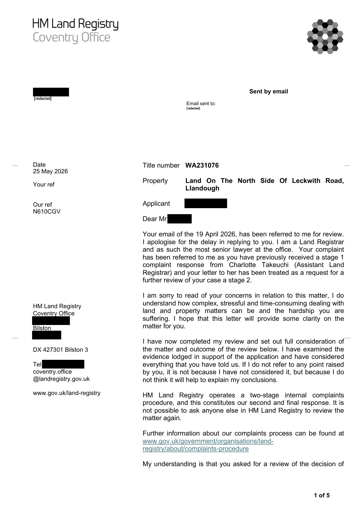

GHF-E106-R96-A1 correspondence (no disclosure)
Stage two complaint decision

Transcript
1 of 5 Sent by email Date 25 May 2026 Your ref Our ref N610CGV HM Land Registry Coventry Office [address redacted] Bilston [address redacted] DX 427301 Bilston 3 Tel [phone redacted] coventry.office @landregistry.gov.uk www.gov.uk/land-registry Title number WA231076 Property Land On The North Side Of Leckwith Road, Llandough Applicant Requester Dear Requester Your email of the 19 April 2026, has been referred to me for review. I apologise for the delay in replying to you. I am a Land Registrar and as such the most senior lawyer at the office. Your complaint has been referred to me as you have previously received a stage 1 complaint response from Charlotte Takeuchi (Assistant Land Registrar) and your letter to her has been treated as a request for a further review of your case a stage 2. I am sorry to read of your concerns in relation to this matter, I do understand how complex, stressful and time-consuming dealing with land and property matters can be and the hardship you are suffering. I hope that this letter will provide some clarity on the matter for you.
Read more
I have now completed my review and set out full consideration of
the matter and outcome of the review below. I have examined the
evidence lodged in support of the application and have considered
everything that you have told us. If I do not refer to any point raised
by you, it is not because I have not considered it, but because I do
not think it will help to explain my conclusions.
HM Land Registry operates a two-stage internal complaints
procedure, and this constitutes our second and final response. It is
not possible to ask anyone else in HM Land Registry to review the
matter again.
Further information about our complaints process can be found at
www.gov.uk/government/organisations/land-
registry/about/complaints-procedure
My understanding is that you asked for a review of the decision of
Email sent to:
Requester
__
__
__
__
[redacted]
[redacted]
[redacted]
[redacted]
2 of 5
the Assistant Land Registrar, Charlotte Takeuchi, and her email
dated the 19 October 2025.
BACKGROUND
I have read through all the correspondence that you have sent and
all of our replies. You have asked for the complaint to be re-
considered and asked us to consider 4 questions that you have
raised at the end of your email.
I know that Ms Takeuchi has set out some of the background of HM
Land Registry but I will set out our role and duties a bit further.
HM Land Registry can only do what the law gives it power to do.
The law in this case is the Land Registration Act 2002 (“the Act”)
and the Land Registration Rules 2003 ("the Rules").
The purpose of these pieces of legislation is to provide a registration
system for interests in land, designed to provide registered title
holders with a state backed guarantee of ownership, and to facilitate
transactions involving interests in land. We do not have any power
to act outside of the parameters laid down by the legislation.
HM Land Registry's main job is to keep a register of interests in
land, and to enter information on the register based on the
applications we receive. We are required to check, before doing so
that each application includes the information required under the Act
and the Rules. We are a recording Agency that records the
information we receive. We do not have administrative power to
investigate or determine disputes that may arise.
The registration history of the property has been clearly set out by
Ms Smith in her letter dated 23 March 2026. In short, we received
an application to register the land on the North side of Leckwith
Road Llandough.
At the time of registration we did not receive or were aware of any
interest that you or your family may or may not have had in the land.
The applicants at the time provided documentary title to the land
that is registered and we were unaware of any dispute that was
possibly ongoing. If you believed that you and your family had an
interest in the land you could have applied at that time for a caution
on the register to note your interest which we may have been
recorded but we did not receive any application.
The applicants had documentary title to the land they were
registered with at the time.
All the issues you have raised including identity misconduct, to the issue of
title, to the land, are issues the Court would have dealt with and if
you disagree with the findings of the Court then that is the
appropriate forum to address your concerns. HM Land Registry is
not the correct forum to resolve this issue.
3 of 5
In respect of the questions you have raised I will deal with these in
turn
1.
Identity mismatch by the Courts. Your grandmother was
married and therefore upon marriage the woman takes on
the husband’s name as there is a marriage certificate to
show this. In the UK, your married name remains your legal
name until you actively change it back to your maiden name.
It is the identity of the person that matters not which name is
used and in this instance, it was clear the proceedings were
in respect of your grandmother.
2.
Therefore, this is not potential evidence of a mistake on the
register.
3.
We will not be commencing the process of rectification or
formally referring the dispute.
4.
There is no claim for indemnity under Schedule 8 of the Act.
CONCLUSION
For the reasons set out above, I do not uphold your complaint.
Having considered all the information available the title has been
registered correctly and there are no grounds for rectification or
indemnity.
I realise that this is not the outcome that you would have hoped for,
but I hope that the above is of assistance in explaining the reasons
for my decision.
As set out at the beginning of this letter, HM Land Registry operates
a two stage complaints process. This is the final stage in that
procedure, and it is not possible to ask anyone else to review this
matter again.
EXTERNAL REMEDIES AVAILABLE TO CUSTOMERS OUTSIDE
HM LAND REGISTRY
If you remain dissatisfied and wish to take this further, the following
options may be available to you.
The Independent Complaints Reviewer (ICR)
Issues with the customer service provided by HM Land Registry can
be referred to the Independent Complaints Reviewer (the ICR) who
may decide to carry out a review. That process is entirely
independent of HM Land Registry. Anyone including members of
the public, businesses and professional advisors are able to utilise
this service. The aim of this service is to provide a free, effective
and impartial review and resolution service that settles complaints.
4 of 5
The ICR can be contacted at: -
The ICR Office
[address redacted]
Canary Wharf
London
[address redacted]
Telephone: [phone redacted]. E-mail: [email redacted]
Further information about the ICR can be found at the following
website: - https://www.icrev.org.uk/contact/
Please note the following important points about the ICR:
The service is free for complainants.
The ICR will not consider a complaint more than six months after
HM Land Registry has completed investigations and given a final
response.
The ICR cannot consider complaints about registration decisions or
legal points or overturn a decision made (for example, a decision
that an objection to an application should be dismissed as
groundless, or a refusal by the registrar to alter the register),
although the ICR may consider a complaint about the manner in
which such a decision was reached.
The ICR cannot recommend that HM Land Registry pay
compensation for losses caused by error or misconduct but may
recommend that a consolatory payment be made in appropriate
circumstances.
The ICR is not able to provide users with legal advice.
Judicial Review
Judicial Review is a type of Court proceeding in which a judge
reviews the lawfulness of a decision or action made by a public
body. Judicial Reviews are a challenge to the way a decision has
been made rather than the rights and wrongs of the conclusion
reached.
If you wish to challenge a legal decision made by H M Land
Registry, you might be able go to court to ask for judicial review of
the way the decision was made.
Further information about the process can be found online at
www.judiciary.gov.uk/you-and-the-judiciary/judicial-review/.
If you are considering this possibility, I suggest you obtain specialist
legal advice as soon as you can because an application usually
needs to be made to court within very strict time limits.
5 of 5
This now concludes my final review.
Yours sincerely
Harbinder Gill
Land RegistrarArtifact description
Notifies the requester of an attached official letter concerning the title without disclosing its contents.
| Catalogue ID | GHF-E106-R96-A1 |
|---|---|
| What it is | PDF document from HM Land Registry. Attached to an email received on 25 May 2026, their reference WA231076/A/216/MC. 5 pages. |
| From | HM Land Registry |
| Email received | 25 May 2026 |
| Their reference | WA231076/A/216/MC |
| Pages | 5 |
| File | Correspondence.pdf (180 KB) |
| State | Read |
Our integration
Part of the records enquiry thread with HM Land Registry opened 26 May 2026. The thread's standing classification is “correspondence (no disclosure)”. Statutory time: no statutory deadline.
Concern to test: whether this reply answers the question as asked, or a narrower one. Not checked against the original request wording here.
What cuts against the case: the body disclosed material, which is the opposite of a refusal; what it disclosed is shown here as sent.
Related: The covering email · What They Don’t Say: WTDS-265e2f7b-1 · EV-0354 in the evidence catalogue · Timeline · Disclosure Dartboard